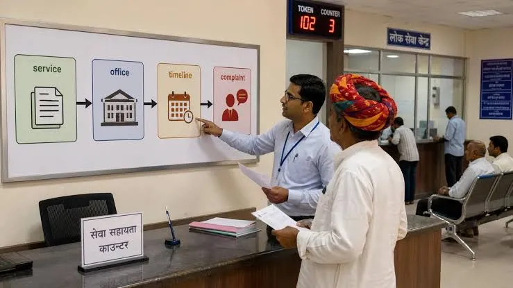
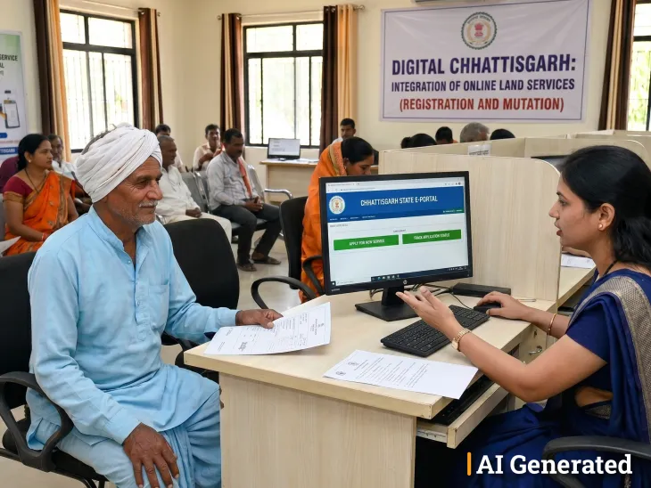

01
DOCUMENTATION
Certificate Services
Information and guidance for essential certificates and official records.
Explore serviceDiscover essential public services designed to make everyday government interactions easier, faster and more accessible.

Access essential certificates, identity documentation and important citizen records through a simple process.
Discover this serviceOne connected destination for essential public services. Find the information and support you need without unnecessary complexity.

CivicConnect helps citizens discover public services, understand application requirements and find the right support for their needs.
Explore essential services and discover the support available for every stage of your journey.
Information and guidance for essential certificates and official records.
Explore serviceDiscover identity-related services, registration information and guidance.
Explore serviceFind information about public welfare programmes and citizen benefits.
Explore service
04Explore property-related information, records and public guidance.
Explore service 05
05
Understand business-related registrations, licensing and procedures.
Explore service.webp) 06
06
Find the right support and guidance for your public service questions.
Explore serviceAccess useful information and understand the steps involved in common public service processes through a clear digital experience.
Understand the information and documents you may need.
Find relevant service details in one organised place.
Get guidance on where to find assistance.
.webp)
Follow a clear path to find the information and assistance you need.
Explore the service directory and identify the service you need.
Read the service details, requirements and available guidance.
Review the information and prepare the documents that may be required.
Reach out through the appropriate support channel when you need help.
.webp)
Public services should be understandable and accessible. Our approach focuses on presenting useful information in a structured way, helping citizens take their next step with confidence.
Quick answers to help you navigate the service directory.
Still need help? Contact usBrowse the service directory on this page and select the category that best matches your requirement.
Review the relevant service information and consult the appropriate official department for the latest requirements.
Yes. Visit the Contact page to find the available assistance information and identify the right support channel.
Availability depends on the service and the relevant government department. Check the official service channel for current availability.
Connect with us and take the next step with confidence.
Welcome to CivicConnect.